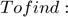
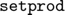
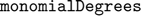

Contents
- The function that we want to approximate. Input to the function is a vector x of size (Number of Points * dimension)
- Input for type of orthogonal polynomial basis. Alternatively, use 'Hermite'
- Generation of various Gaussian-Quadrature nodes and weights
- The function approximation starts here
- This part is just for visualization, works only for d=2
clear;clc;
Given: $$ f(x): $\mathbb{R}^d\rightarrow \mathbb{R}$  $f_N(x)\: \mathbb{R]^d \rightarrow \mathbb{R}$ $$
Error updating Text.
Character vector must have valid interpreter syntax:
$f_N(x)\: \mathbb{R]^d \rightarrow \mathbb{R}$
Error updating Text.
Character vector must have valid interpreter syntax:
$$ f(x): $\mathbb{R}^d\rightarrow \mathbb{R}$
The function that we want to approximate. Input to the function is a vector x of size (Number of Points * dimension)
f = @(x) x(:,1).*x(:,2).^2;%cos(2*pi + 5.0*(x(:,1) + x(:,2)));%x(:,1).*exp(x(:,2))./(1 + x(:,3).^2); d = 2; %dimension of the random vector
Input for type of orthogonal polynomial basis. Alternatively, use 'Hermite'
polyBasis = 'Legendre';
Generation of various Gaussian-Quadrature nodes and weights
 function takes in a vector of points and the dimension 'd' and gives the cartesian product as an array of size (Length of input vector^d * d)
q = 50; [xi,w] = gaussQuad(q,polyBasis); eval_pts = setprod(xi,d); %(q^d points) weights = setprod(w,d); %Quadrature rule for the mean square error(Q^d points) Q = 70; [xi_mse,w_mse] = gaussQuad(Q,polyBasis); eval_pts_mse = setprod(xi_mse,d); weights_mse = setprod(w_mse,d);
The function approximation starts here
 function takes in the dimension 'd' and and 'N' the maximum degree of the
order = [0,1,2,3,4,5,6,7,8]; %maximum degree of the multivariate polynomial MSE = []; %Empty array to store the mean-squared error for N = order lexOrdering = monomialDegrees(d,N); %Pre-computing the normalization factors %gamma = factorial(0:N); %Hermite gamma = 2.0./(2*(0:N) + 1.0); %Legendre P = size(lexOrdering,1); fhat = zeros(P,1); fapprox = 0; for i_P = 1:P fhat(i_P,1) = (sum(legendre(eval_pts,lexOrdering(i_P,:)').*f(eval_pts).*prod(weights,2)))/prod(gamma(lexOrdering(i_P,:)+1)); fapprox = fapprox + fhat(i_P,1)*legendre(eval_pts_mse, lexOrdering(i_P,:)'); end %Computing the mean squared error MSE = [MSE;sqrt(sum((fapprox - f(eval_pts_mse)).^2.*prod(weights_mse,2)))]; end
This part is just for visualization, works only for d=2
if d == 2 [x,y] = meshgrid(xi,xi); fn = reshape(f(eval_pts),q,q); fn_approx = reshape(fapprox,q,q); surf(x,y,fn,'FaceColor',[1,0,0]); %Exact function is in red hold on; surf(x,y,fn_approx,'FaceColor',[0,1,0]); %Approx. function is in green lim = 2; xlim([-lim,lim]);ylim([-lim,lim]); end